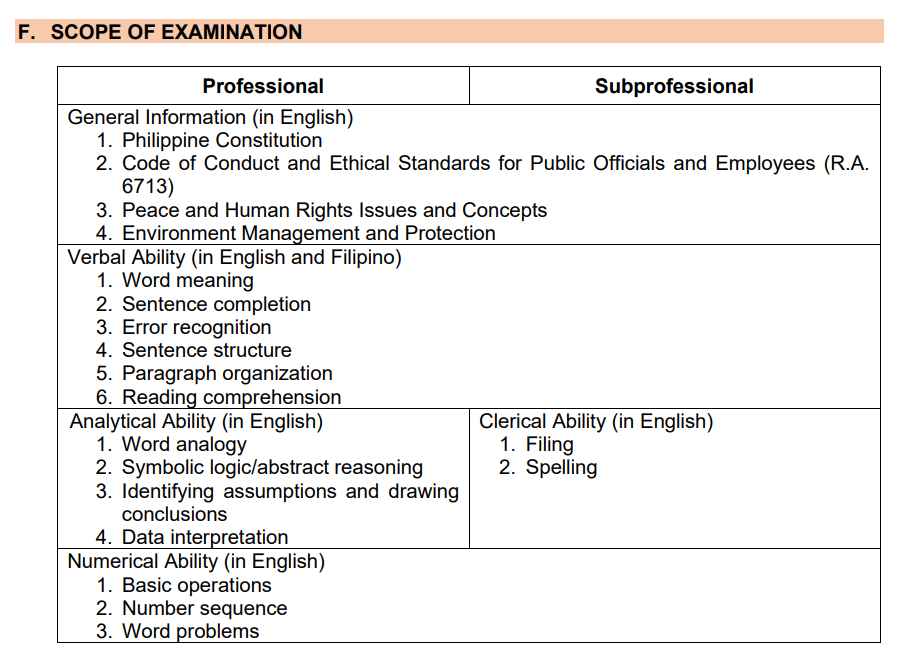

• “Senior High School pa lang po ako, pwede na po ba ako mag-take ng CSE?” As long as 18 years old ka na, pwede ka na mag take. Anyone can take the exam as long as 18+ na ang age, regardless kung ano education background mo.
• “Ano po ba dapat kong i-take, Professional or Sub-Professional?” It depends on you po kung ano ang gusto mo. If ever na magti-take ka ng Sub-Professional and nakapasa ka, you can take the Professional exam. If ever naman na magti-take ka ng Professional and nakapasa ka, no need na na i-take ang Sub-Professional.
• “Pwede po ba na ibang tao ang magpasa ng requirements ko?” Hindi po pwede. Ikaw po dapat mismo ang magpasa ng requirements mo.
• “’Di po ako makakapunta sa araw ng appointment ko. Pwede po ba sa ibang araw na lang ako pumunta para magpasa?” Hindi po pwede. Pag hindi ka nakapunta sa araw ng appointment mo, automatically forfeited na ang slot mo.
• “Kailangan po ba na naka-formal attire sa 4-piece na ID pictures?” Hindi naman po. As long as presentable, decent ang suot mo, okay na.
• “Pwede na po bang idikit yung mga ID pictures sa Application Form?” ‘Wag muna kasi i-chi-check pa po nila kung okay na yung 4-piece na ID pictures mo.
• “May babayaran po ba sa pagkuha ng slot online?” Wala po. Ang pagbayad po ng 500 pesos ay sa araw ng appointment mo.
• “Kung saan po ba ako nagpasa ng requirements, doon din ako mag-eexam?” Yes po. For example, if nagpasa ka ng requirements sa CSC Field Office sa Legazpi City, around Legazpi City din ang magiging venue ng pag-eexaman mo.
• “Saan ko po malalaman kung saan ako mag-eexam, yung exact venue/location?” Mga 1 week before the exam, pwede mo na i-check sa ONSA. (https://erpo.csc.gov.ph/eNOSAv3/)
• “Ano po ang coverage ng exam? Ilang items lahat?” Professional: 170 items, 3 hours and 10 minutes. Sub-Professional: 160 items, 2 hours and 40 minutes. (image source: CSC official announcement, page.)

• “Ilan po ang passing score?” 80.
• “Pwede po bang gumamit ng calculator o magdala ng scratch paper?” Hindi po, bawal po ang calculator at magdala ng scratch paper. Yung test booklet po ay pwedeng gawing scratch paper para sa solving.
• “Nawala ko po yung application receipt ko. Paano po kaya yun sa araw ng exam?” Just bring a valid ID po na pwede mo ipakita sa proctor. Preferably, yung valid ID na prinisent mo nung nagpasa ka ng requirements.